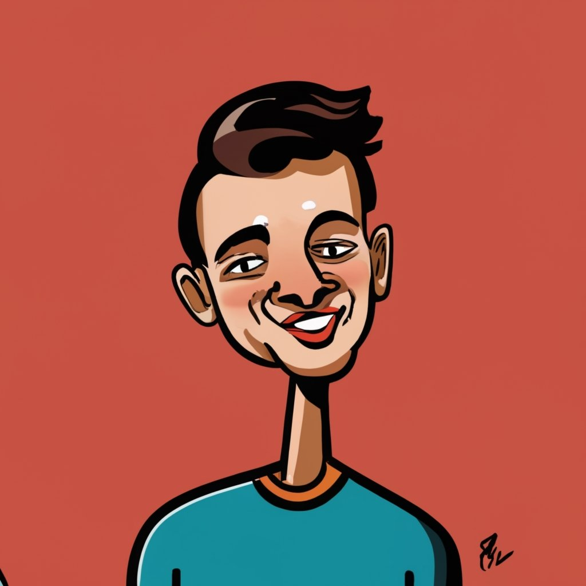

Carlen
📞 🎥 🔕🔒
Carles, es importante que te des por enterada de aquellas ideas que se encuentran haciendo eco en las profundidades de mis pensamientos y que agobian mi tranquilidad, por esa razón me he tomado el tiempo para escribirte esta pequeña carta, en la que plasmo todo aquello que eres tú, vista desde mis ojos, entendida o incomprendida desde mis pensamientos.
No recuerdo el día exacto, ni recuerdo a la persona o personas que se encontraban a nuestro lado cuando nos conocimos, era irrelevante. Sin embargo, tengo ciertas nociones: la luna ya en el punto exacto que ilumina nuestros pasos, a orilla de la intemperie, con ese ensordecedor ruido de los autos y luces segadoras a orillas de la Universidad (CUNOR), pues es el lugar donde un amigo de por medio nos presentó, o más bien se inició la conversación sin ceremonias, él solamente estaba ahí presente, por el común de por medio entre ambos, creo acordarme.
El común entre él y tú es el transporte, el común entre tú y yo es él.
Es importante destacar la primera impresión que provocaste en mí, en las primerísimas palabras que intercambiamos, son pocas palabras, ¡soy de pocas palabras! Pero generalmente en la primera interacción me parece gracioso ser un tanto fuerte y directo, sin contemplaciones, y esperar a ver la forma en como se toma el comentario la persona, ¿Se enojará? ¿Me va a maldecir después? ¿Cuál será la primera impresión que se llevó? ¿Me va a recordar cómo alguien rudo?
Esperando a ver las gesticulaciones del rostro, (aunque no lo parezca soy cuidadoso observador) llegué a la conclusión de que te lo tomaste bien, tu sonrisa es algo muy distintivo, por lo tanto, cada comentario crea una reacción, la tuya era una sonrisa y un comentario de vuelta en forma de broma para salir del aprieto.
Los comentarios de confianza, sin confiar ni conocer a la persona, me parece la mejor forma de crear confianza. Al momento de la interacción intento simular que conozco a la persona y que puedo confiar en él o ella, no importa si lo que digo es una grosería. Se crea esa atmosfera de confianza mutua y si hay confianza, eso me gusta.
Con esto no quiero decir que siempre funciona, en ocasiones, con el pasar del tiempo, todo aquello bello de ese día se desvanece, no se las razones. Considero que eso me pasa con cada persona que conozco a excepción de unos pocos.
Carlen, me parecías increíble, tu confianza, tu sonrisa, tu personalidad de ese momento, ¡me gustaba! Físicamente no eres la mujer más atractiva he de ser sinsero, aunque si hay mucho que destacar, por cualquier razón, siempre encuentro algo bello en las mujeres, ¿en todas? En la mayoría. Algo bello físicamente, la personalidad es otro asunto que tomas más que un solo día. En ti encontré físicamente una cintura perfecta, para ser tomada por mis brazos, con ambas manos, y plantarte lujuriosamente unos deliciosos besos, en esos labios modestamente grandes, carnosos y jugosos.
Esa no fue la razón de la salida posterior al primer encuentro, quería debelar más de ti, saber que de interesante podría descubrir, ahora no hablo del físico, si no, de tu persona, te tu comportamiento, de tus pensamientos y como actúas ante diversas situaciones, agradables y desagradables.
Una salida no muy emocionante, antes de que el momento llegara al fin, si fui preso de una cierta exaltación, los nervios aquellos del primer encuentro, para una actividad que no sabes bien qué carajo pasará, ni de qué temas se hablara o si en dado caso se llega a la incomodidad o el aburrimiento, ¿qué procederá? No tenía la remota idea, ni la emoción me dejó claridad para preguntarme si tenías los mismos nervios que me estaban poseyendo a mi o no.
Recuerdo que se sentía una cierta tensión al momento en que abordaste el auto, con tus pantalones de tela negro que te vienen bien con esa delgadez ligera en tus piernas, caminando rumbo al vehículo, tu sonrisa se hiso presente, empezamos a hablar, temas nada relevantes, en un punto llegamos a chocarnos las manos, nada más.
Realmente quería algo más, añoraba un punto emocionante, algo que subiera la tensión, talvez introducir mi traviesa mano por la parte inferior de tu blusa blancas mangas largas, y subir suavemente hasta alcanzar a tocar tú pezón, palparlos y ser consiente del cambio involuntario que el tacto produce, o aproximarme y buscar tus labios, o simplemente un tema interesante que nos envolviera en mutua sintonía, que la emoción de hablar de dicho tema nos impacientara.
En el restaurante, no encontré algo mejor, solo charla cotidiana.
¿Cómo podía tocarte y que fuera consentido? Claro, quería tocar la Luna, sin haber creado el vehículo para llegar a ella.
Dos mujeres de muy buen aspecto eran de las pocas que se encontraban en el sitio, la verdad ambas tenían un muy buen semblante. No había manera de llegar hasta ellas.
Maneje un largo tramo, desde mi departamento hasta el tuyo, la luna hacía ya en un punto visible, ¡Oh hermosa Luna de Xelajú! no era la primera vez que manejaba lejos y de hora muy alargada por intentar un acercamiento a una mujer.
Anhelaba que al momento del ¡hasta pronto! por alguna razón pasará lo que con antelación la imaginación en la mente hacía. En el recorrido, el ambiente se tornó un tanto aburrido, no hubo aproximaciones, quería realmente el calor de tú cuerpo, bajar temblorosamente la mano sudorosa hacia tu pierna izquierda y frotarla suavemente, con un tono se caricia, sentir tu calor corporal, que se agitara tu respiración y la mía al unísono.
Simplemente las últimas palabras que brotaron de mi boca fueron –pilas cuídate- y regresé a todo volumen escuchando canciones de Julión Alvares. Me decepcione.
Me gusta que las cosas salgan bien y que sean rápidas. Algo que es ridículo en las relaciones humanas, al menos cuando se trata de las relaciones que intento crear, desconozco si otras personas cogen el mismo día que se conocen, supongo que hay más de lo que imagino, tal vez he de ser el único que no lo hace.
No lo sé, porque no llegué a conocerte, no llegue a tener más razones para volver a verte. Dos días especiales, el resto se fueron a la mierda, no hubo más conversaciones, ni salidas, realmente no tuve la intención de buscarte, tuve la impresión de que ambos quedamos con el deseo cumplido, de lo que habla Platón en el banquete. Al obtener aquello de lo que carezco, quedo saciado, como el que tiene hambre y come, no desea comer en el momento. Mi deseo por acercarme queda completo y se desaparece. No del todo, pero se pierdo cierto interés.
También podría explicarse si tomamos de lo que habla Slavoj Zizek sobre la metáfora de nuestros infortunios y lo explica con el corto de Charles Chaplin.
Conociste lo que no soy y yo desee lo que no eres, puesto que tiempo después, empezamos a rebelar lo que realmente somos, generalmente esto lo hago a los pocos días después de tener una buena interacción, empiezan a salir rasgos que no se demuestran en las primeras dos (a lo mucho) interacciones. Como cuando ese hombre súper confiado desaparece y se muestra el hombre un tanto carente de confianza, inseguro de sí mismo. Inseguro porque hay otros hombres que se presentan con rostros más bellos. Se muestra mi descontento, la furia se queda adentro de mí, me daña, la explosión detona en mí y el humo que brota por la magnitud de tal explosivo es el gesto de enojo y la mirada de furia encendida que busca ignorarte y hacerte el mayor daño posible, darte de probar aquello que me ha destrozado, ¿tal vez eso me alivia? O simplemente me digo a mi mismo: créate la idea de que ya es otro amor perdido. Así procedo, es entonces cuando la indiferencia se presenta y rápidamente fijo la mirada hacia la belleza de otra mujer. Por el otro lado, tu empiezas a mostrar lo que realmente eres y no de la mentira que apreciaba, como dice Arjona:” el problema no es que me mientas, el problema es cuando no lo haces” bueno, no lo dijo así, pero está un tanto compuesto para lo que intentó trasmitirte mi querida Carlen.
Ahora no queda más que una incomodidad en cada momento en el que intento acercarme o por casualidad el no saludarse no es opción. No te veo de la misma forma y supongo que tu tampoco, puesto que no entablas una conversación como al principio, tu sonrisa no hace acto de presencia, intentar evitar a toda costa algún acercamiento es ahora la meta. La mirada toma un rumbo opuesto, no se encuentran, solo se evaden, la conversación no fluye, no salen las palabras, lo único en que pienso es en salir de allí, me hace sentir mal quedarme cada segundo, cada minuto son puñaladas de insatisfacción. ¡O maldita sea! No solo es el momento, en la noche solo tengo recuerdos de una pesadilla, me destroza la ansiedad y la angustia.
Enviado por:
@Cartico
Enviado ✔️✔️